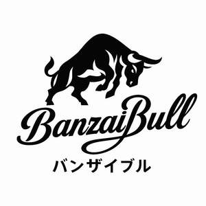

Trade Mark Journal No.2025/022 30 May 2025
UK00004201405 9 May 2025 (3,5,18,21,25,28)

- Class 3
- Cosmetics; non-medicated skin care preparations; creams and lotions; deodorants and antiperspirants; aftershaves; body wash; shower gels; exfoliating scrubs; skin moisturisers; massage oils; body sprays; facial cleansers; facial masks; beauty creams; sun-tanning and sunscreen preparations; essential oils; shampoos; hair conditioners; shaving gels and lotions; non-medicated bath preparations; nail care products; pre-shave and post-shave preparations; perfumed body care products; and toiletry preparations.
- Class 5
- Protein supplements; amino acid supplements; branched-chain amino acids (BCAAs); pre-workout supplements; post-workout recovery supplements; creatine; testosterone boosters; ZMA supplements; liver support and detoxification supplements; multivitamin and mineral supplements; herbal supplements for sports performance; electrolyte replacement drinks; serums; energy-boosting supplements; and non-prescription nutraceuticals for general health and fitness.
- Class 18
- Bags; gym bags; sports bags; backpacks; rucksacks; waist bags; belt bags; holdalls; tote bags; duffel bags; weekend bags; overnight bags; travel bags; trunks; luggage; trolley bags; roller bags; cabin bags; messenger bags; crossbody bags; courier bags; school bags; handbags; purses; shoulder bags; sling bags; clutch bags; briefcases; tool bags; wash bags; toiletry bags; make-up bags; wrist-mounted carryall bags; key cases; pouches; leather and imitation leather goods; umbrellas and parasols.
- Class 21
- Bottles; water bottles; protein shakers; collapsible bottles and shakers; infuser bottles; drinking flasks; thermos bottles; insulated bottles; reusable drink containers; sports bottles; travel mugs; cups; mixing bottles; household containers for beverages; and non-electric portable beverage mixers.
- Class 25
- Clothing; gym wear; activewear; sportswear; namely; T-shirts; tank tops; stringers; vests; hoodies; sweatshirts; shorts; joggers; leggings; base layers for athletic use; sports bras; tracksuits; jackets; beanies; hats; caps; socks; gloves; and footwear.
- Class 28
- Exercise equipment; gymnastic and sporting articles; weightlifting belts; lifting straps; wrist straps; ankle straps; thumb loops; hook grips; resistance bands; loop bands; training gloves; support braces for knees, elbows, wrists, and ankles; wraps; grips; pull-up assist bands.
BanzaiBull LTD